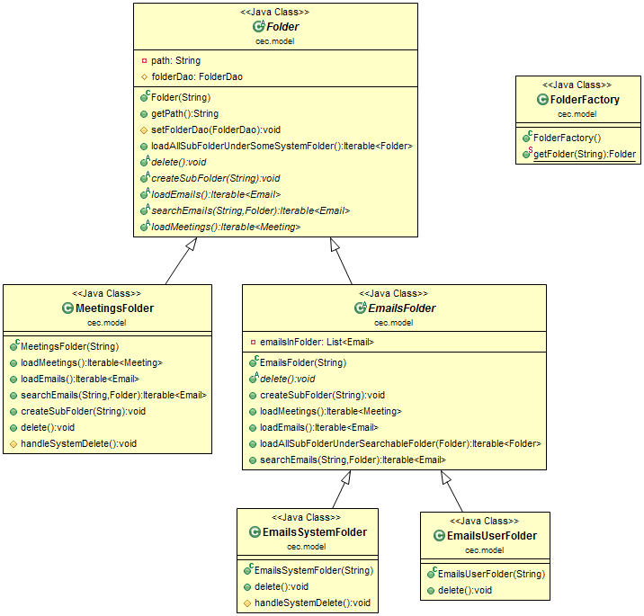
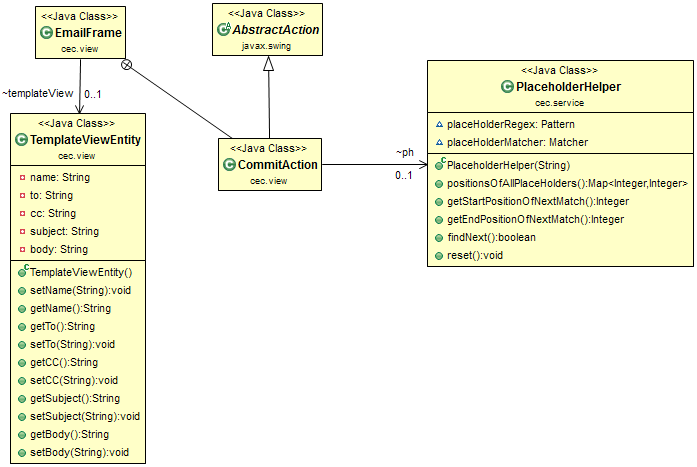
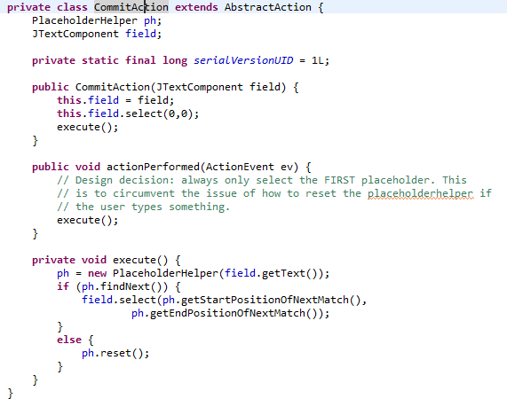

Wednesday, June 5, 2013
Group 5: Amish Gala, Deyvid William, Pankaj Kapania, and Romeo Honvo
Statistics:
| Type | Measurement Phase 1 | Measurement Phase 2 |
|---|---|---|
| Total LOC | 3222 (43 classes) | 9633 (94 classes) |
| Total Production LOC | 2477 (29 classes) | 7292 (69 classes) |
| Total Unit Test LOC | 742 (14 classes, 40 unit tests, 7 integration tests) | 2341 (25 classes, 137 unit tests, 18 integration tests ) |
| Code Coverage (ALL) | 55.6% | 57.3% |
| Code Coverage (Unit) | 32.2% | 32.5% |
| Code Coverage (Integration) | 35.5% | 36.8% |
Phase 2 presented us with some new requirements to complement our already robust email client:
The package structure stayed the same. Classes were simply added to each tier
Email Template
The Email template class diagram is shown here. It is interesting to note that we have followed the same n-tier architecture as originally created. EmailFrame in the context of a Template (NEW, EDIT, APPLY) will know to call the correct service layer methods when actions are performed. Model layer classes to store templates and the collection of templates are provided, and they communicate with the persistence layer abstraction TemplateDao.
Search Emails
Email interface was enhanced to implement a new Searchable interface. This allowed our application to treat emails as searchable, and thus call the "isMatch" method on them. The email delegated the responsibility to a new Search object which used regex to determine if there is a match. This separation of concerns and nice encapsulation allowed us to fully unit test the search feature (38 JUnit tests!) in isolation. The JTable object in the EmailClient main application was updated with the results, and users could then double click to open up a found email.
Rule Filters
Rule Filters, just like Templates and Meetings required us to build objects in each layer of our n-tier architecture. The communication between layers was respected, and we used View Entity objects to ensure that there was no direct coupling. RuleFrame is responsible to handle the new and edit functionality. RuleSettings is responsible to help the user organize all rules by having them visible all in one place, and given the ability to re-order them.
In order to realize the function of ordered rules, we decided to use a separate XML file to store the value of the latest rule. This allowed us to easily "query" for the next rule ID. Swap was enabled so that users could change the order of rules, and therefore influence how their emails would be affected when rules were executed.
Meetings
Meetings constructed as first-class citizens in our overall design - they are given their own independent UI, service, model and persistence objects, and the existing Folder architecture was adapted to handle displaying and manipulation of meetings. We needed to consider the operations such as create, edit, and cancel/delete. One thing we noticed was that the meeting view entity was quite large, and that perhaps we could encapsulate sub-features into their own objects (for example MeetingDates). This will be left as an exercise to the reader.
Problem: Template view looks almost exactly the same as Email view
Our design has Template reuse the same view class EmailFrame. This at first seemed
like a good idea since Templates and Emails are very similar; however, towards the end of phase 2,
it became troublesome. In the end, we decided to live with this violation of SRP (EmailFrame can
be instantiated for both Emails and Template), because the benefit of reduced duplication outweighed
the other considerations.
Problem: how to support Meeting Objects and the fact that they need to be displayed in a folder in the UI.
Originally, Folder was an abstract class, with two children SystemFolder and UserFolder (to represent the different folders in our hierarchy of folders). Each Folder know about its contents - a generic collection of <Email>. With the introduction of Meetings, we needed to think long and hard about how to handle these new objects, since they too needed to be represented in some sort of containing folder. Our solution looked like this:

Essentially, we needed to push down SystemFolder and UserFolder in the inheritance hierarchy so that we could treat Folders containing Meetings and Folders containing Emails similarly. However, even this solution (being as clean as it was), still led to some headaches and "conditional logic" in our EmailClient main view class. Additionally, MeetingFolder and UserFolder shared some mutually exclusive methods, and we were forced to throw exceptions in the event that they were incorrectly called.
Problem: how to support a nice flow of guided template usage so the user is delighted
This was a challenging endeavour. We first tried to manually parse the fields in a template, and build some sort of map of placeholders. This, coupled with the complexities of handling replacements in the text and responding to keyboard events resulted in quite a big headache. Eventually, after some research into using JTextArea and JTextFields, we decided that using javax.swing.InputMap and javax.swing.ActionMap was the best approach, and hid complexities in well encapsulated objects.
For the regex part, we designed an implemented a Placeholder Helper class, whose responsibility was to respond with the current start and end positions of the next available placeholder match.

Each field on which we wanted to apply the highlighting mechanism was asked to return its Input Map and Action Map. From there, we registered an input (in our case, either the Enter key, or the Tab key), and corresponding Action (in our case, to run an Abstract Action which we aptly named CommitAction). Commit Action took as input the field for which the input was performed, and then executed a simple method (action performed was called by the swing framework upon detection of the input):

Much of the complexity of dealing with the regex and positions was hidden nicely in the Placeholder Helper class. This allowed us to fully test some of the edge and corner cases before actually using the methods.
Problem: dealing with single rules, multiple rules, and overlapping rules
Our approach here was to make the application of rules as simple as possible. From the very beginning, we designed rules to work with the following constraints:
Currently our save policy does not check if saving a template with the same name will overwrite an existing template with the same name. This is
If the user opens the Rule Settings window, and proceeds to edit one rule, but then decides to cancel the operation, the UI will still show that the rule is selected on the JTable. But if the user decides to click Edit again, he is in for quite a surprise! The system responds with "Please select a rule to edit."
We wanted to try and use a Test Helper for some of the integration tests to handle some of the heavy lifting, and hide away some complexity from the test class itself. This was not completed in time.
We were unable to cleanup every single TODO left in the code. This is something which we should target before beginning the implementation task for Phase 3.
{kind=link}
{kind=link}
{kind=link}
{kind=link}